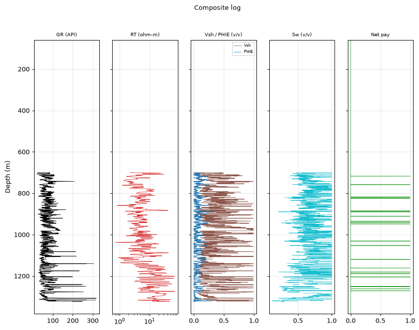
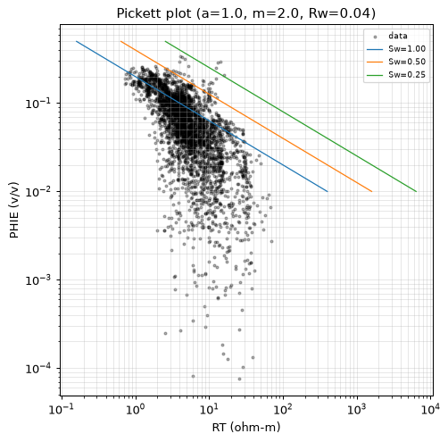
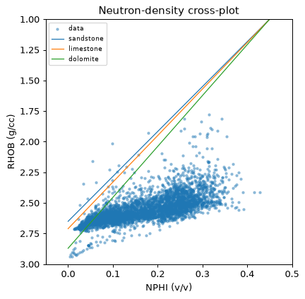
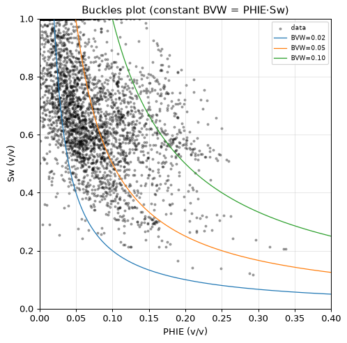
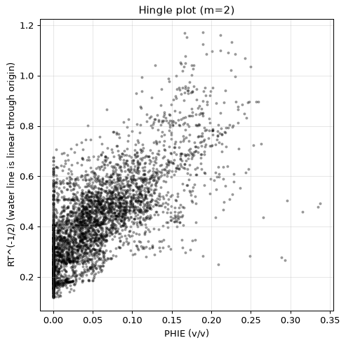
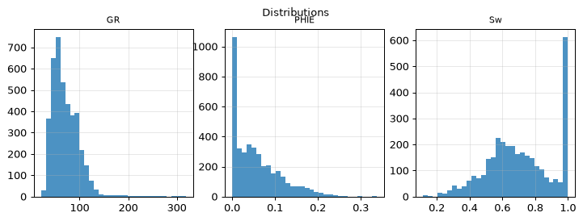
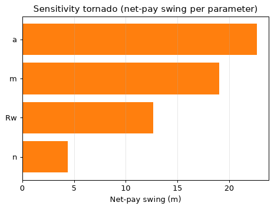
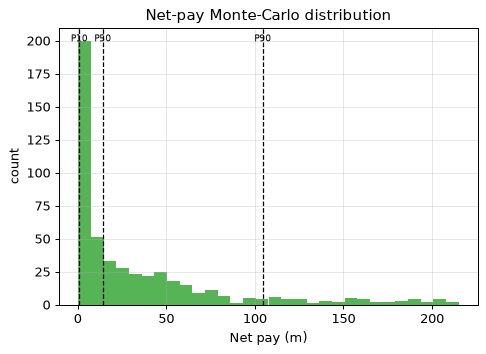

| Well (UWI) | 15-135-24,881-00-00 |
| Log date | Sat Feb 28 00-46-47 2009 |
| Service company | Log Tech |
| Acquisition date (header) | Sat Feb 28 00-46-47 2009 |
| PLSS location | Sec 12 T20S R22W (map precision ±1.6 km) |
| Larionov variant | old_rocks (degraded) |
| Convergence status | DID_NOT_CONVERGE |
| Confidence tier | ○ BRACKETED |
| Engine versions | calc_vsh 0.1.0 · calc_phie 0.1.0 · calc_sw 0.1.0 · formula_registry 0.1.0 |
| Config hash (SHA-256) | 2a9cb78728e386ab… |
| Git SHA | 31c0f4a959a5 |
| Generated | autonomously, no human in the per-report loop |
Confidence legend. Each result is tagged by parameter provenance: ● FIRM (core-calibrated) · ◐ QUALIFIED (offset-derived) · ○ BRACKETED (regional/global default — read as a range, dominant uncertainty stated). The system does not claim *always correct*; it states how well-supported each number is.
⚠️ ABSTENTION — this is NOT a confident estimate. The run did not converge to a defensible result; the numbers below are an uncalibrated engineering estimate, reported for transparency only:
- 1 unresolved MECHANICAL objection(s)
Well 15-135-24,881-00-00 did not converge to a defensible result; this is a bracketed, uncalibrated engineering estimate with one unresolved mechanical objection. The 623.0 m gross interval yields a net-to-gross of 0.020. Net pay spans a P10–P90 range of 0.9 to 104.5 m (P50 14.2 m), a spread driven almost entirely by the cementation exponent 'a', a regional default that swings the estimate by 22.7 m and remains uncalibrated to core. Within the pay intervals, average effective porosity is 0.165, water saturation 0.404, and shale volume 0.205, but these properties inherit the same structural uncertainty because the saturation model rests on an unvalidated 'a'. The result is presented as a bracketed range, not a confident point estimate.
Net pay P10 / P50 / P90 = 0.9 / 14.2 / 104.5 m.
Net pay is dominated by 'a', which is a regional DEFAULT (uncalibrated). This is the single largest uncertainty — the result is bracketed, not a confident point estimate.
| Edit type | Curve | Detail |
|---|---|---|
| unit_conversion | NPHI | factor 0.01 |
| hard_range_mask | RXO | count 1 |
| hard_range_mask | RT | count 117 |
| hard_range_mask | RMED | count 95 |
| hard_range_mask | RHOB | count 1 |
| hard_range_mask | DRHO | count 4 |
| hard_range_mask | PHID_SVC | count 5 |
| range_warn | GR | count 4 |
| range_warn | RHOB | count 4 |
| range_warn | NPHI | count 3 |
| spike_removal | — | 89 edits |
| degradation | — | 3 edits |
Raw mnemonics mapped to canonical curve names:
| Canonical | Raw mnemonic |
|---|---|
| DCAL | DCAL |
| DRHO | RHOC |
| GR | GR |
| NPHI | CNLS |
| PHID_SVC | DPOR |
| RHOB | RHOB |
| RMED | RILM |
| RT | RILD |
| RXO | RLL3 |
| SP | SP |
Unit conversions: NPHI×0.01.
Edits applied before compute (by type): degradation: 3, hard_range_mask: 6, range_warn: 3, spike_removal: 89, unit_conversion: 1.
All numbers are produced by the deterministic, golden-tested engine. The LLM only selects methods/parameters and writes prose — it never computes a number. Figures are deterministic renderings of these computed numbers for the human reader; the agent reasons over the numeric EDA digest, not images (the models have no vision).
| Step | Method (frozen) | Version |
|---|---|---|
| Vsh | Larionov 1969 (old rocks) | vsh_larionov_old 0.1.0 |
| PHIE | Density-neutron crossplot, shale-corrected | phie_density_neutron 0.1.0 |
| Sw | Poupon-Leveaux 1971 (Indonesia) | sw_indonesia 0.1.0 |
| Net pay | Vsh/PHIE/Sw cutoffs → net sand → net reservoir → net pay | netpay 0.1.0 |
| Uncertainty | Monte Carlo P10/P50/P90 + parameter sensitivity | mc 0.1.0 |
Low-resistivity scan: rt_threshold=1.79, n_flagged=848, intervals=[[278.6, 282.2], [284.2, 339.1], [345.5, 346.7], [361.8, 362.4], [366.8, 367.1], [399.9, 401.7], [419.9, 421.8], [458.6, 458.7], [459.8, 467.4], [478.7, 480.2]].
Invasion profile (multi-depth resistivities, 8471 samples): fraction with shallow reading above deep (Rxo/RT > 1.2, invaded/permeable indication): 0.604; reversed (< 0.8): 0.098; median Rxo/RT 1.301; median Rmed/RT 0.961. Raw-curve facts; naming moveable hydrocarbon is the analyst's judgement.
Matrix point-shares (fraction of points near each matrix line): sandstone: 0.091, limestone: 0.219, dolomite: 0.247. Engine crossplot output; naming the dominant lithology is the analyst's judgement. Comparison with core/mud log: not available (LAS-only).
Composite log

Pickett plot

Neutron-density crossplot

Buckles plot

Hingle plot

Distributions

Sensitivity tornado

Net-pay Monte-Carlo distribution

Mean Vsh by method (selection is the engine's; the LLM authors no number):
| Method | Mean Vsh | Selected |
|---|---|---|
| vsh_larionov_old | 0.363 | ✓ |
| vsh_larionov_tertiary | 0.278 | |
| vsh_linear | 0.493 | |
| vsh_clavier | 0.345 | |
| vsh_steiber | 0.302 | |
| vsh_neutron_density | 0.307 | |
| vsh_multimineral | 0.274 |
Mean porosity by method (effective where shale-corrected; the LLM authors no number):
| Method | Mean porosity | Selected |
|---|---|---|
| phie_density_neutron | 0.055 | ✓ |
| phi_density | 0.094 | |
| phi_neutron | 0.167 |
Service-company porosity curves (cross-check evidence, full-column means): phid_svc: 0.197. Matrix assumptions differ per curve; agreement/disagreement is the analyst's reading.
Mean Sw (Poupon-Leveaux 1971 (Indonesia)) = 0.707 (a=1.00, m=2.00, n=2.00, Rw=0.0254 ohm-m). Electrical parameters are engine-sourced; alternative Sw models are optional sections.
Mean Sw by method (engine-computed comparison; the LLM authors no number):
| Method | Mean Sw | Selected |
|---|---|---|
| sw_archie | 0.901 | |
| sw_simandoux | 0.681 | |
| sw_indonesia | 0.707 | ✓ |
Raw net-pay runs merged into 21 intervals (gap tolerance 1.5 m); showing the 15 thickest, depth-ordered. Full set traces in the ledger.
| Interval | Top (m) | Base (m) | Net pay (m) | Avg PHIE | Avg Sw | Avg Vsh |
|---|---|---|---|---|---|---|
| Z1 | 717.3 | 717.7 | 0.5 | 0.222 | 0.464 | 0.167 |
| Z2 | 757.4 | 758.6 | 1.2 | 0.173 | 0.459 | 0.105 |
| Z3 | 821.7 | 822.0 | 0.5 | 0.116 | 0.445 | 0.309 |
| Z4 | 824.3 | 825.1 | 0.9 | 0.126 | 0.437 | 0.319 |
| Z5 | 885.3 | 885.9 | 0.8 | 0.161 | 0.440 | 0.146 |
| Z6 | 889.3 | 890.3 | 1.2 | 0.262 | 0.281 | 0.224 |
| Z7 | 911.0 | 911.5 | 0.6 | 0.143 | 0.451 | 0.250 |
| Z8 | 948.4 | 948.7 | 0.5 | 0.168 | 0.462 | 0.184 |
| Z9 | 1052.0 | 1052.9 | 1.1 | 0.183 | 0.420 | 0.158 |
| Z10 | 1118.8 | 1120.6 | 2.0 | 0.179 | 0.430 | 0.176 |
| Z11 | 1160.8 | 1161.0 | 0.3 | 0.118 | 0.479 | 0.079 |
| Z12 | 1180.0 | 1180.9 | 0.5 | 0.133 | 0.312 | 0.207 |
| Z13 | 1188.3 | 1188.6 | 0.5 | 0.127 | 0.453 | 0.227 |
| Z14 | 1204.7 | 1204.9 | 0.3 | 0.119 | 0.336 | 0.208 |
| Z15 | 1271.0 | 1271.6 | 0.8 | 0.128 | 0.312 | 0.241 |
| Quantity | Value |
|---|---|
| Gross interval | 623.0 m |
| Net pay (P10/P50/P90) | 0.9 / 14.2 / 104.5 m |
| Net-to-gross | 0.020 |
| Avg PHIE (net pay) | 0.165 |
| Avg Sw (net pay) | 0.404 |
| Avg Vsh (net pay) | 0.205 |
Monte Carlo, 500 realizations (seed 42). Net pay swing per parameter (one-at-a-time):
| Parameter | Net-pay swing (m) |
|---|---|
| a | 22.7 |
| m | 19.1 |
| Rw | 12.6 |
| n | 4.4 |
Dominant uncertainty: a (swing 22.7 m).
Multi-seed robustness: P50 stable (spread 0.2 m across 4 seeds).
Net pay is dominated by 'a', which is a regional DEFAULT (uncalibrated). This is the single largest uncertainty — the result is bracketed, not a confident point estimate.
_Uncalibrated screening estimate (no core); Sw used as the Swirr proxy._
Unsupervised k-means on 7327 samples into 4 electrofacies (sample counts: facies 0: 1942, facies 1: 1392, facies 2: 2466, facies 3: 1527). Descriptive only — no core labels.
_Built on the uncalibrated permeability; indicative only._
| Parameter | Value | Unit | Provenance | Source |
|---|---|---|---|---|
| gr_min | 20.000 | API | default | — |
| gr_max | 120.000 | API | default | — |
| rho_ma | 2.710 | g/cc | default | Schlumberger 1989 |
| rho_fl | 1.000 | g/cc | default | — |
| phie_max | 0.450 | v/v | default | — |
| phi_sh_d | 0.100 | v/v | default | — |
| phi_sh_n | 0.350 | v/v | default | — |
| a | 1.000 | - | default | Winsauer et al. 1952 |
| m | 2.000 | - | default | Archie, G.E. 1942 |
| n | 2.000 | - | default | Archie, G.E. 1942 |
| Rw | 0.040 | ohm-m | default | Kansas Geological Survey 2000 |
| rt_hydrocarbon_floor | 5.000 | ohm-m | default | — |
| vsh_cutoff | 0.350 | v/v | default | — |
| phie_cutoff | 0.100 | v/v | default | — |
| sw_cutoff | 0.500 | v/v | default | — |
| bit_size_config | 7.875 | in | default | — |
| qc_abort_threshold | 0.800 | - | default | — |
| circuit_breaker_n | 3.000 | - | default | — |
The citations table (not RAG) gives each cited parameter exactly one frozen source. Parameters tagged
defaultare regional/global — they drive the bracketed tier.
Boundary-inclusive criteria applied by the engine (netpay) to flag reservoir:
| Stage | Criterion | Cutoff | Provenance |
|---|---|---|---|
| Net sand | Vsh ≤ cutoff | 0.350 | default |
| Net reservoir | + PHIE ≥ cutoff | 0.100 | default |
| Net pay | + Sw ≤ cutoff | 0.500 | default |
Cutoff values are engine parameters (never LLM-authored); the dominant net-pay uncertainty is a — see Uncertainty for the swing.
Curve provenance (canonical ← raw mnemonic): DCAL←DCAL, DRHO←RHOC, GR←GR, NPHI←CNLS, PHID_SVC←DPOR, RHOB←RHOB, RMED←RILM, RT←RILD, RXO←RLL3, SP←SP.
QC edits applied before compute — degradation: 3, hard_range_mask: 6, range_warn: 3, spike_removal: 89, unit_conversion: 1.
| Validator | Type | Detail |
|---|---|---|
| vsh_phie_anticorrelation | support | Vsh-PHIE Pearson 0.97 > 0.3 (dirty rock + high porosity) |
| rt_sw_consistency | mechanical | 67 depths with Sw<0.4 but RT<5.0 ohm-m |
flowchart TD
dec_1["decision: step: depth_quality"]
act_1["tool_call: depth_quality"]
dec_2["decision: step: compare_methods"]
act_2["tool_call: compare_methods"]
dec_3["decision: step: compute_vsh"]
act_3["tool_call: compute_vsh"]
dec_4["decision: step: compare_methods"]
act_4["tool_call: compare_methods"]
dec_5["decision: step: compute_phie"]
act_5["tool_call: compute_phie"]
dec_6["decision: step: rw_evidence"]
act_6["tool_call: rw_evidence"]
dec_7["decision: step: compute_sw"]
act_7["tool_call: compute_sw"]
dec_8["decision: step: compare_methods"]
act_8["tool_call: compare_methods"]
dec_9["decision: step: validate_choice"]
act_9["tool_call: validate_choice"]
dec_10["decision: step: apply_cutoffs"]
act_10["tool_call: apply_cutoffs"]
dec_11["decision: step: run_uncertainty"]
act_11["tool_call: run_uncertainty"]
dec_12["decision: step: objection_profile"]
act_12["tool_call: objection_profile"]
dec_13["decision: step: compute_sw"]
act_13["tool_call: compute_sw"]
dec_14["decision: step: apply_cutoffs"]
act_14["tool_call: apply_cutoffs"]
dec_15["decision: step: run_uncertainty"]
act_15["tool_call: run_uncertainty"]
dec_16["decision: step: lithology"]
act_16["tool_call: lithology"]
dec_17["decision: step: permeability"]
act_17["tool_call: permeability"]
dec_18["decision: step: interval_stats"]
act_18["tool_call: interval_stats"]
dec_19["decision: wasted no-op: compute_sw"]
dec_20["decision: step: electrofacies"]
act_19["tool_call: electrofacies"]
dec_21["decision: step: derived_parameters"]
act_20["tool_call: derived_parameters"]
dec_22["decision: wasted no-op: compute_sw"]
dec_23["decision: step: set_zone_of_interest"]
act_21["tool_call: set_zone_of_interest"]
dec_24["decision: wasted no-op: permeability"]
dec_25["decision: step: rock_quality"]
act_22["tool_call: rock_quality"]
dec_26["decision: step: compute_sw"]
act_23["tool_call: compute_sw"]
dec_27["decision: step: apply_cutoffs"]
act_24["tool_call: apply_cutoffs"]
dec_28["decision: step: run_uncertainty"]
act_25["tool_call: run_uncertainty"]
dec_29["decision: wasted no-op: lithology"]
dec_30["decision: step: interval_stats"]
act_26["tool_call: interval_stats"]
dec_31["decision: wasted no-op: compute_sw"]
dec_32["decision: wasted no-op: compute_sw"]This is a LAS-only study. Data that would calibrate the interpretation is absent:
Net pay P10/P50/P90 = 0.9/14.2/104.5 m. The single largest uncertainty is the cementation exponent 'a' (regional default, uncalibrated), which dominates the net-pay spread. The inversion did not converge and carries one unresolved mechanical objection. All reported properties (PHIE 0.165, Sw 0.404, Vsh 0.205) are bracketed estimates; no figure should be read as a firm value.
{
"net_pay_total_m": 12.649200000000008,
"net_pay_p10_p50_p90": [
0.9144000000000005,
14.173200000000008,
104.47020000000012
],
"driving_params": {
"a": 1.0,
"m": 2.0,
"n": 2.0,
"Rw": 0.04
},
"claim_verifier": {
"result": "PASS",
"flags": [],
"tone_flags": []
}
}| Item | Present |
|---|---|
| QC edits recorded before compute | ✓ |
| Every number ledger-traced | ✓ |
| Confidence tier on the run | ✓ |
| Parameter citations frozen | ✓ |
| Validator objections listed, not hidden | ✓ |
| Uncertainty propagated (Monte Carlo) | ✓ |
| Claim verifier run on prose | ✓ |